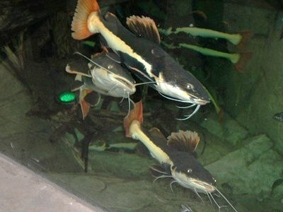
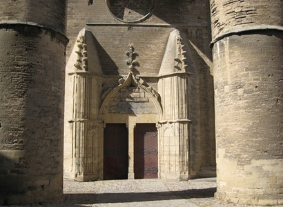
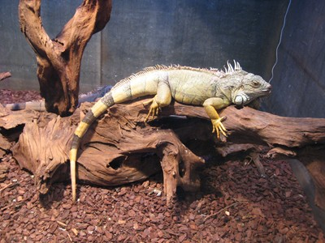

Bulletin N° 21
Avril 2008
JOURNEE INOUBLIABLE
DE LA SORTIE DU 29 MARS 2008 MONTPELLIER / AQUARIUM ET SERRE AMAZONIENNE
6 h 30, Parking de CARREFOUR PORTET, 42 personnes prennent place à bord du bus Direction le département de l'Hérault. Pour cette journée nous sommes accompagnés de Martine notre guide pour la journée et de Dominique, le chauffeur, bien connu de nous tous pour nous avoir conduit sur différents sites.

9 h 45, nous arrivons sans encombre à l'aquarium MARE NOSTRUM, où nous allons découvrir la flore, la faune. Après être passés dans un « sas de déconnexion équipé de miroirs et d'un plafond d'eau, nous pénétrons dans l'aquarium sur un bassin de méduses. Dans un décor de grottes sous-marines, nous allons découvrir différentes espèces de poissons dont certaines cohabitent avec les requins. Au fil de la visite nous affronterons les 40èmes rugissants. Après le calme, la tempête, nous allons affronter la puissance des éléments qui se déchaînent : roulis, tangage, orage, etc a bord d'une cabine de pilotage de navire. La visite se poursuit par le passage devant des icebergs, des manchots, les mers du sud avec ses récifs coralliens bleus, roses et jaunes et une multitude de poissons multicolores. Nous traversons ensuite une forêt tropicale, cascades, végétation luxuriante, etc� la visite se terminera par le passage à la boutique où certaines personnes feront quelques emplettes.

12 heures nous reprenons le bus, nous passons devant les quartiers Antigone et Polygone chef d'�uvre d'architecture de style néo-grec réalisé selon le projet de l'architecte Ricardo Bofill. Il est temps de regagner le restaurant Le Grillardin situé sur une place du centre historique de Montpellier, la place de la Chapelle Neuve. Après le repas, pris par certains en terrasse car il faisait très beau 24 °, nous faisons à pied la visite guidée de la vieille ville au c�ur de Montpellier (huitième ville de France, ville universitaire avec 43 % de la population de moins de 30 ans) afin de découvrir les richesses historiques, architecturales et naturelles de cette ville, du moyen âge à nos jours. Départ de la Place de la Comédie (XVIIIème siècle) entourée de constructions cossues et élégantes, de l'Opéra Comédie, de la statut des Trois Grâces. Nous continuons par la rue de la Loge , rue Jacques C�ur, place Jean Jaurès (centre historique) et nous arrivons à la Préfecture d'où l'on vois en enfilade l'Arc de Triomphe et la Place du Pérou. Continuation par la Place de la Canourgue , la cathédrale St Pierre et la faculté de médecine, puis arrivée Place du Pérou avec l'Arc de Triomphe situé au point le plus haut de la ville, construit en 1691, il est dédié à la gloire de Louis XIV . Au centre de l'esplanade la statut équestre de Louis XIV domine. En fond, nous découvrons le Château d'eau entouré de deux magnifiques escaliers et l'aqueduc St Clément. La visite étant terminée nous regagnons notre bus pour nous rendre à la serre amazonienne où nous sommes attendus à 16 heures. Quelques minutes et nous retrouvons dans la serre où de nombreuses espèces végétales reflètent la biodiversité indispensable à l'équilibre de l'écosystème amazonien (les palmiers, les fougères, les arbres feuillus). Nous découvrons dans ce monde extraordinaire le grand fourmilier, des ocelots, des tatous, des ouistitis, des tamarins, des toucans, des chauves souris, des mygales géantes, les singes hurleurs qui sortent de la serre pour aller à l'extérieur dans une immense cage, etc� Dans les enclos, aquariums terrariums et bassins nous découvrons également des boas, piranhas, caïmans, tortues, différents poissons et autres� L'air y est humide et la température chaude. Des cacades coulent ça et là, une véritable merveille. La visite se termine et avant de sortir nous passons devant la volière où se trouvent des ibis rouges et des hérons à gros bec.

La journée a été très bien remplie et très agréable, le soleil était de la partie, tous les participants sont rentrés satisfaits de leur journée même si elle a été fatigante pour certains
17 h 30, il est temps de regagner Toulouse. L'arrivée se fera à 20 h 30 comme prévu
Michelle AUZER
_______________
Page 1 : Le Mot du Président
Page 2 : Couverture maladie, Projet Mémorial, Avis de décèsl
Page 3 : Escapade sur la Riviéra des fleurs
Page 4 :Sortie à Montpellier: ville, aquarium, et serre amazonienne
Page 5 :Repas de printemps
Page 6 :Journée à Albi/Cordes, inscrisption
Page 7 :Théatre, Danse, Voyages 2009, Oenologie
Page 8 :Randonnées, informatique, généalogie, pétanque
______________________________
RAPPEL : permanences tous les mardis de 10 à12h
Téléphone / répondeur : 05 62 11 45 50
Adresse é-mail : azf-ms@wanadoo.fr
Adresse postale : AZF 143 route d'Espagne
31100 Toulouse
|
|